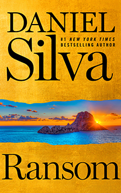
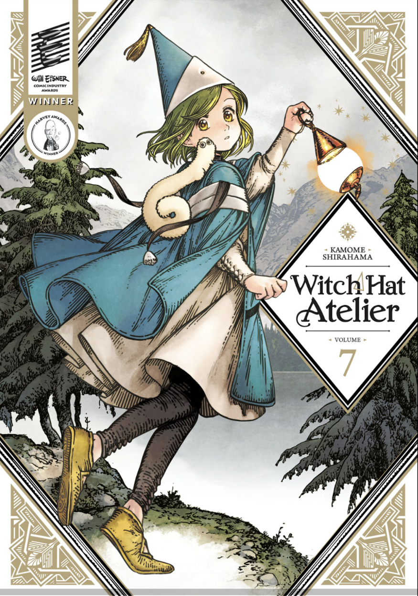
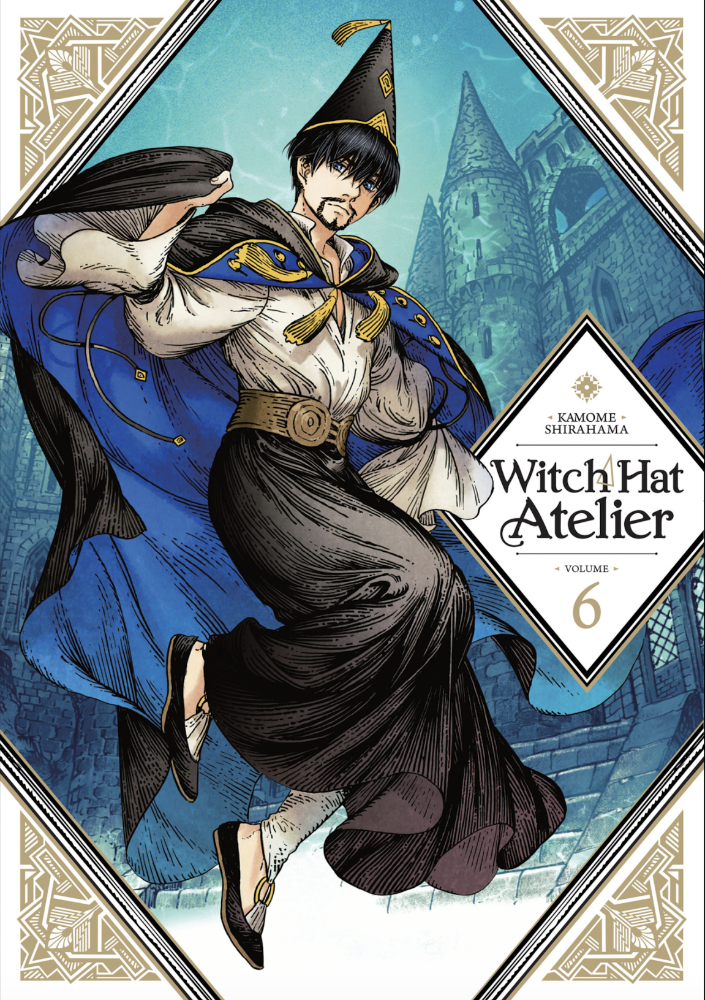

Ransom — Daniel Silva
This is another fun and exciting installment in the Gabriel Allon series. My rating may reflect a personal bias toward the main character, but I offer no apologies for that. Gabriel Allon is pulled into action when the wife of a billionaire mogul disappears while on vacation in Ibiza, and he's asked to help search for her. What starts as a kidnapping investigation unravels into something far bigger: a threat to national security and an assassination attempt during a summit of world leaders. I always enjoy the cat-and-mouse game, the execution of operations, the fails and successes: it's like a puzzle told in story form. Since it's also contemporary, Daniel Silva weaves in pieces of current events, which makes you wonder how many of today's news stories hide truths that happen covertly. What I do miss, however, is the seat-hanging suspense from previous novels. This feels like a tamed-down version of Gabriel; I miss his days as an assassin and operative of the Mossad. Still, at least his life isn't in as much danger, and the longer he lives, the better the outlook for more installments, so I can't wait for my next annual book date with him.

Witch Hat Atelier, Vol. 7 — Kamome Shirahama
I was bawling my eyes out in this volume. Volume 6 ended on a mysterious statement from Beldaruit to Coco regarding Qifrey, and here we finally get the answer: why Qifrey is so obsessed with finding the Brimmed Caps, what he lost to them, and what his true goal is. Beldaruit's explanation sends Coco into an emotional spiral, and watching her break down, crying out to Qifrey about how scared she was, broke me too. The way Qifrey comforted her showed how much he genuinely cares for her, and that was only reinforced earlier when Olruggio questioned whether Qifrey was keeping Coco around just to get to the Brimmed Caps. His words and actions proved otherwise. He's still scary, Qifrey, and there's clearly still something he's keeping to himself. But I can say with confidence that Coco's trust in him is not misplaced. There is a far more complex reason behind his actions, and I can't wait to uncover it. What stays with me most is Coco's choice: when given the chance, she chose to pave her own path to help those in need, and not just for her own sake.

Witch Hat Atelier, Vol. 6 — Kamome Shirahama
This volume had me holding my breath from the very first page. Picking up right where Volume 5 left off, Qifrey, Olruggio, and the apprentices are summoned to The Great Hall by Beldaruit, one of the Three Wise Ones, and what follows expands the world far beyond the Atelier, giving us a deeper look at the witches, the ban, the Healing Spire, and the rules that govern it all. The way the girls passed their second test was amazing, their teamwork earning them passing in flying colors, and it was genuinely wonderful to watch. We also get a glimpse into Agott's background, her family, and why she's been pushing herself so hard to prove her worth, which made her feel so much more real. The bond between her and Coco is getting stronger, and Agott is slowly opening up to her peers. Beldaruit was such a fun and lovely character, and knowing he was once Qifrey's master makes me certain there's far more to him. With the tension between the wonder of magic and the control of it slowly building, I can't wait to see where this series goes.